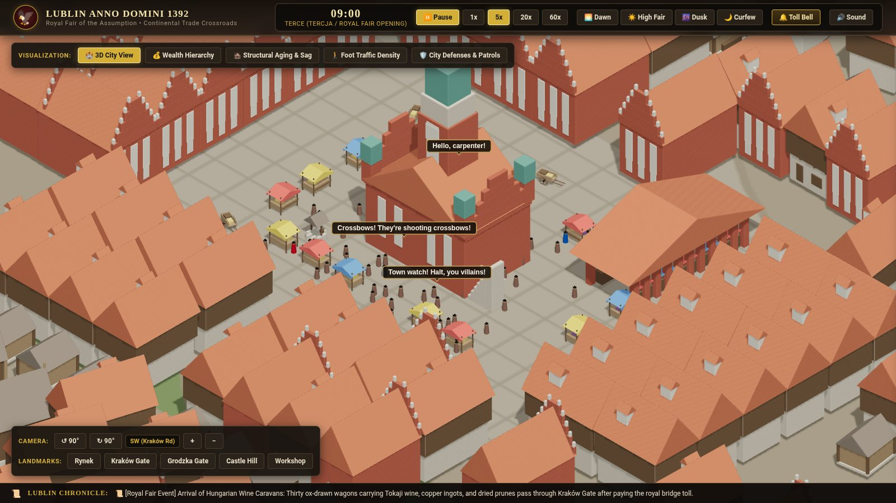
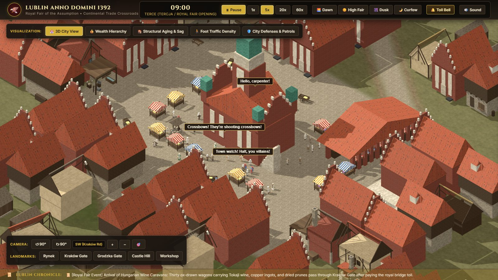
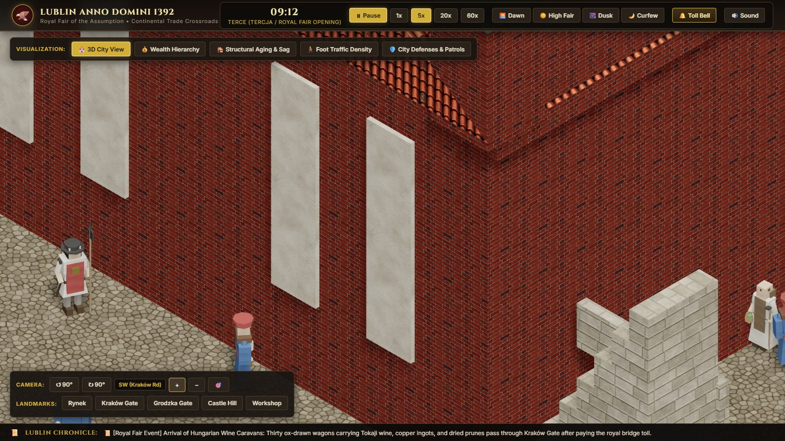
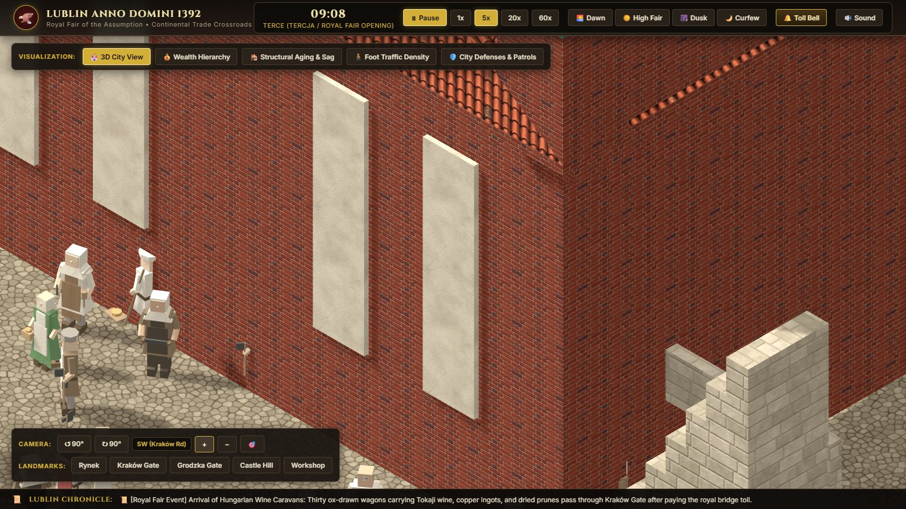
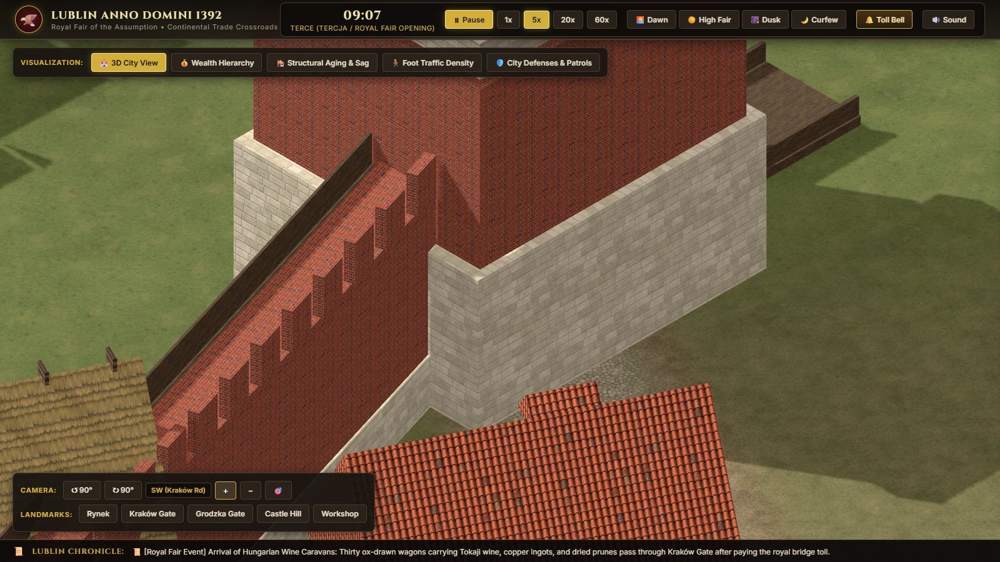
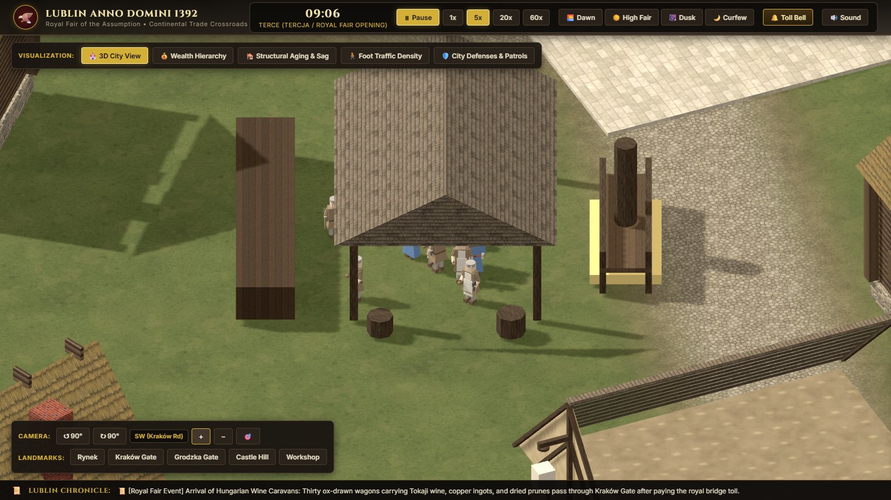
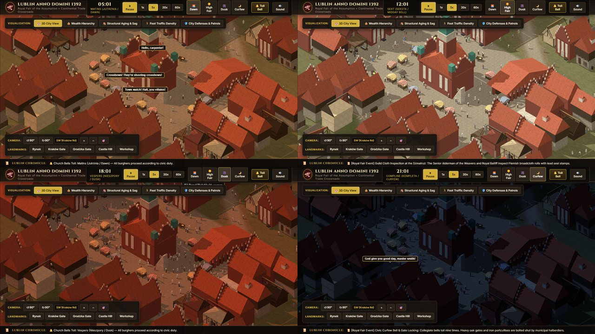
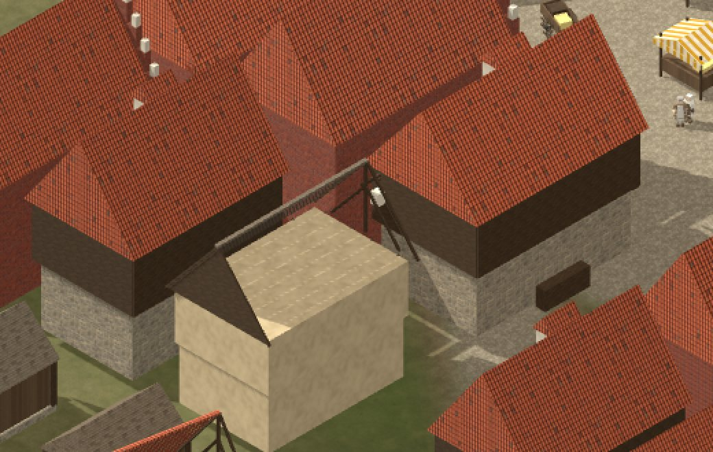

All 31 building, wall, prop and tree models now use the 19 texture families from the material board. The ground blends grass, dirt and cobblestone, and the lighting has been rebalanced to the style guide. Every image below is the live game, captured from the default camera or a landmark button.


BeforeAfter| Check | Before | After | Target |
|---|---|---|---|
| Shaded wall brightness vs. lit wall (town hall brick, linear) | 0.75 | 0.52 | 0.45–0.55 (style guide §3) |
| Lit brick colour on screen | 134, 97, 84 | 130, 70, 54 | texture 135, 69, 55 |
| Sun direction relative to camera | 8° from straight behind (no visible shadows) | top-left, 45° up, fixed to the view | top-left, 45° (style guide §3) |
| Textures that tile without a seam | none existed | 19 / 19 | all |
| Brick course height / log diameter | n/a | 10 cm / 25 cm | next to a 1.75 m citizen |





Both are visible in the Gemini screenshot too. They come from the Blender geometry, not the textures.

The most common house type covers its whole upper storey with 12 cm timber slabs (build_assets.py, build_house_half_timber), so it reads as a dark band instead of white plaster crossed by dark beams. The fix is to model posts, rails and braces over the plaster, which KEY_FINDINGS.md §13 already describes. Because this house repeats across hundreds of parcels, it is the biggest remaining difference from the concept art.
In the centre of the crop, a plaster block covers its own roof, so only a gable edge shows. I still need to identify which model it is.